Sich überschneidende Boxdiagramme
Box-Overlap
Zusammenfassung
Alle Origin-Diagramme werden aus einer Diagrammvorlage erstellt. Vorlagen dienen dazu, vorherige Anpassungen wieder aufrufen zu können. Sie dienen außerdem als Ausgangspunkt für neue benutzerdefinierte Anpassungen. Dieses Tutorial zeigt Ihnen, wie Sie die folgenden benutzerdefinierten Boxdiagramme erstellen können:
- 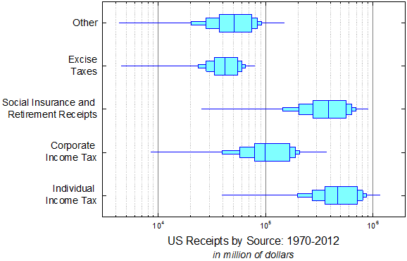
Origin-Version mind. erforderlich: 2016 SR0
Was Sie lernen werden
- Einstellungen eines Boxdiagramms benutzerdefiniert anpassen,
- Dialog Achsen für Boxdiagramme benutzerdefiniert anpassen
- Mehrere Diagramm zusammenfügen und verknüpfen
- XY-Achsen austauschen
Schritte
Dieses Tutorial basiert auf dem Projekt: <Origin-Verzeichnis>\Samples\Tutorial Data.opj.
Das erste Boxdiagramm erstellen
- Öffnen Sie das Projekt Tutorial Data.opj und navigieren Sie zu dem Ordner Overlapped Box Chart.
- Aktivieren Sie die Arbeitsmappe Book1B und Sheet1. Markieren Sie die Spalten B bis F. Klicken Sie dann auf Zeichnen: Statistisch: Boxdiagramm. Ein Boxdiagramm wird erstellt.
- Markieren und löschen Sie das Legendenobjekt aus dem Diagramm.
- Klicken Sie zum Öffnen des Dialogs Details Zeichnung doppelt auf eine Box. Gehen Sie zur Registerkarte Gruppe und setzen Sie das Inkrement der Farbe Rand auf Kein (andere Elemente sollten bereits auf Kein gesetzt sein).
- 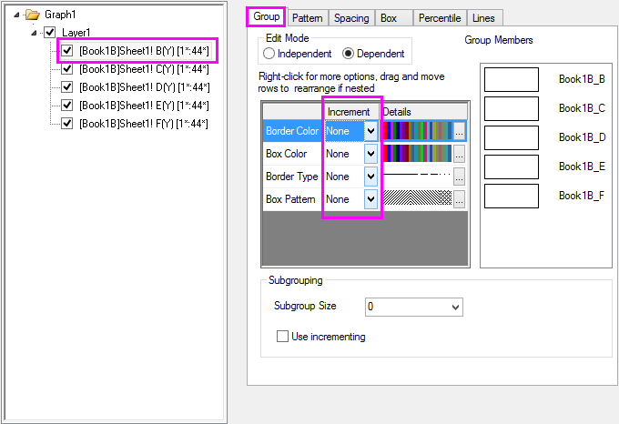
- Gehen Sie zur Registerkarte Muster und duplizieren Sie die Einstellungen, wie unten gezeigt.
- 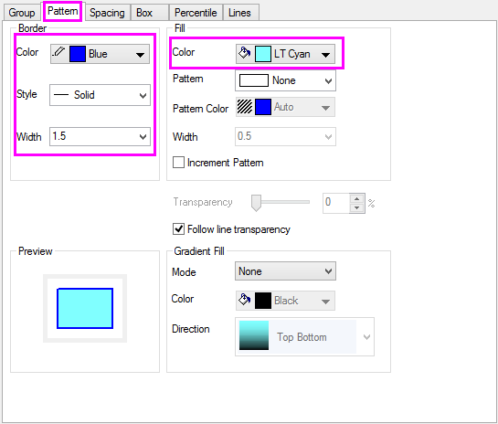
- Wechseln Sie zur Registerkarte Abstände und setzen Sie Lücke zwischen Boxen (in %) auf 40.
- 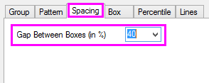
- Gehen Sie zur Registerkarte Boxdiagramm und duplizieren Sie die Einstellungen, wie unten gezeigt.
- 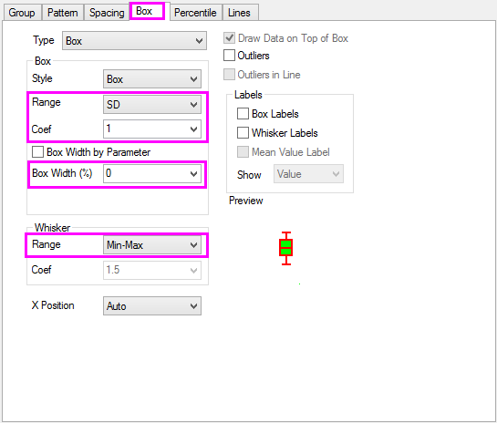
- Gehen Sie zur Registerkarte Prozentangaben und löschen Sie alle Symbole. Klicken Sie auf OK, um den Dialog zu schließen.
- 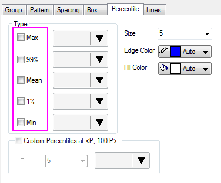
Das sich überschneidende Boxdiagramm erstellen
- Klicken Sie mit der rechten Maustaste auf die Titelleiste des Diagrammfensters und wählen Sie Duplizieren. Wiederholen Sie dies zweimal. Jetzt sollten Sie vier identische Diagrammfenster haben.
- 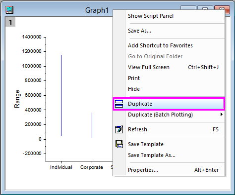
- Klicken Sie doppelt auf eine Box in Graph2, um den Dialog Details Zeichnung zu öffnen. Gehen Sie zur Registerkarte Box und setzen Sie den Wert des Koeffizienten auf 0,95, die Boxbreite (%) auf 15 und legen Sie die Option Keine Whisker fest.
- 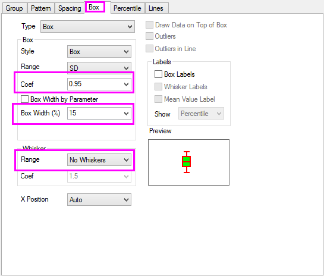
- Wiederholen Sie Schritt 2 für Graph3 mit Koeffizient = 0,75, Boxbreite (%) = 40 und Keine Whisker.
- Wiederholen Sie Schritt 2 für Graph4 mit Koeffizient = 0,5, Boxbreite (%) = 70 und Keine Whisker.

- Wählen Sie Grafik: Grafikfenster zusammenfügen, um den Dialog merge_graph zu öffnen. Legen Sie die Einstellungen wie unten fest und klicken Sie auf OK.
- 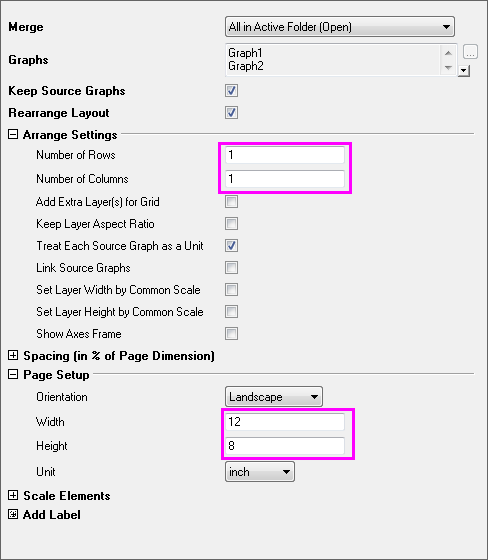
- Wählen Sie Grafik: Layer-Verwaltung im Menü, um den Dialog zu öffnen.
- Wählen Sie Layer2 und gehen Sie zur Registerkarte Verknüpfung. Duplizieren Sie die Einstellungen wie unten und klicken Sie auf Anwenden.
- 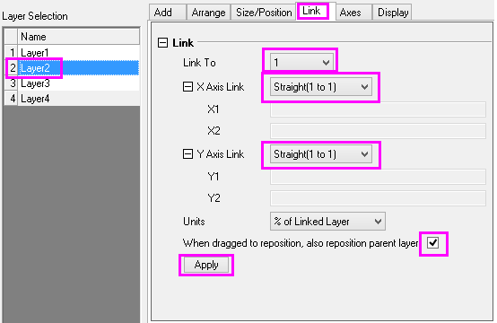
- Gehen Sie zur Registerkarte Achsen, deaktivieren Sie alle Kontrollkästchen und klicken Sie auf Anwenden.
- 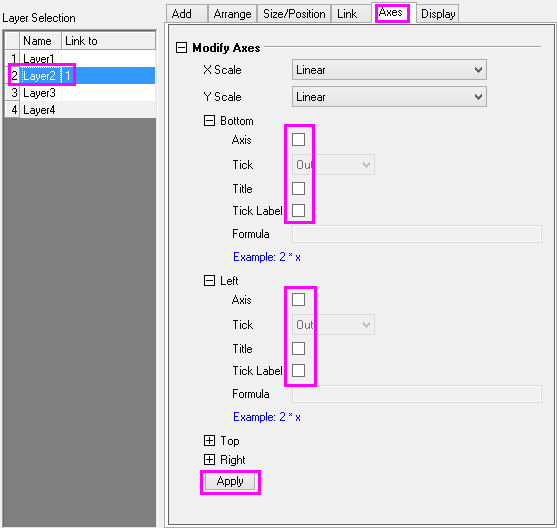
- Wiederholen Sie Schritt 7 bis 8 für Layer 3 und Layer 4. Klicken Sie auf OK, um den Dialog zu schließen.
- 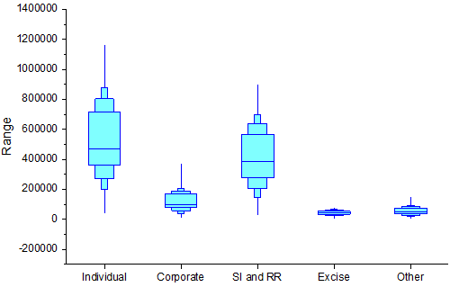
Weitere benutzerdefinierte Anpassungen
- Klicken Sie doppelt auf die Y-Achse, um den Dialog Achsen zu öffnen. Gehen Sie zur Registerkarte Skalierung und duplizieren Sie die Einstellungen für die Y-Achse (Vertikal), wie unten gezeigt.
- 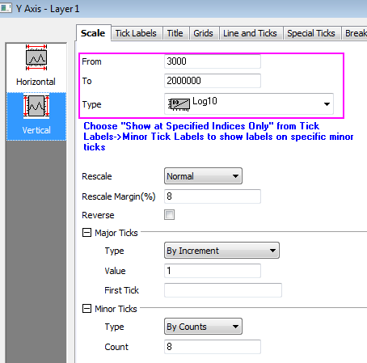
- Gehen Sie zur Registerkarte Beschriftung der Hilfsstriche und duplizieren Sie die Einstellungen, wie unten gezeigt.
- 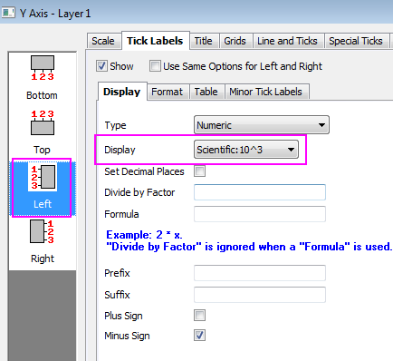
- 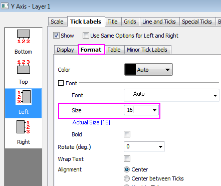
- Gehen Sie zur Registerkarte Gitternetze und duplizieren Sie die Einstellungen, wie unten gezeigt.
- 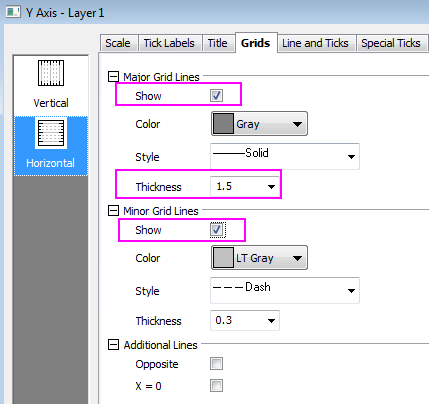
- Gehen Sie zur Registerkarte Linie und Hilfsstriche, halten Sie die Strg-Taste gedrückt, um sowohl Unten als auch Links auszuwählen, aktivieren Sie dann Die gleichen Optionen für Oben und Unten und ändern Sie die Einstellungen für Linie und Hilfsstriche wie unten gezeigt.
- 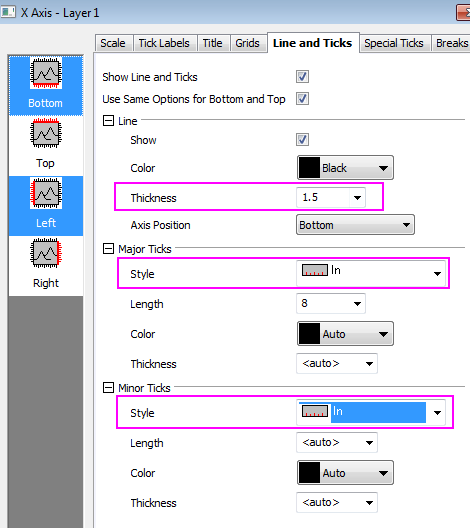
- Wechseln Sie wieder zur Registerkarte Beschriftung der Hilfsstriche. Duplizieren Sie die Einstellungen für die X-Achse, wie unten gezeigt. Klicken Sie danach auf OK, um den Dialog Achsen zu schließen und alle Einstellungen anzuwenden:
- 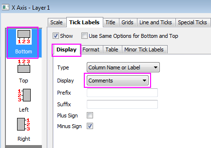
- 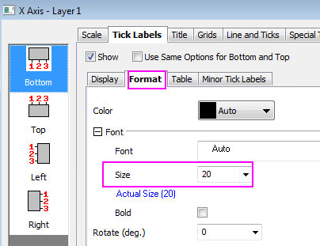
- Klicken Sie mit der rechten Maustaste auf den Titel der Y-Achse und wählen Sie Einstellungen. Duplizieren Sie die Einstellungen, wie unten gezeigt, und klicken Sie auf OK.
- 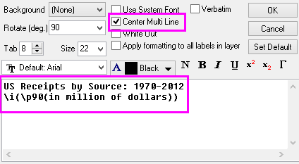
- Aktivieren Sie Layer1, indem Sie auf das Layersymbol in der linken oberen Ecke des Diagrammfensters klicken. Wählen Sie Grafik: X-Y-Achse vertauschen.
- Verändern Sie die Größe des Diagrammlayers und positionieren Sie ihn ggf. neu, so dass alles bequem ins Diagrammfenster angeordnet ist.